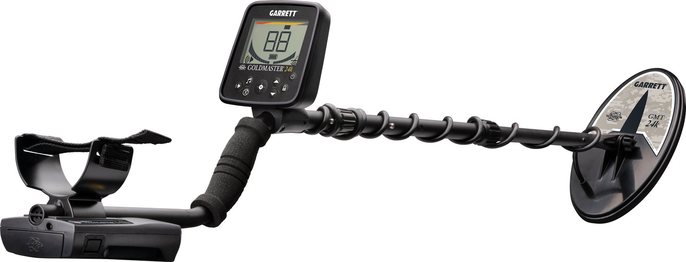
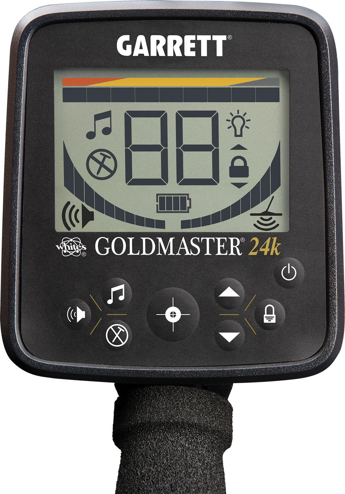
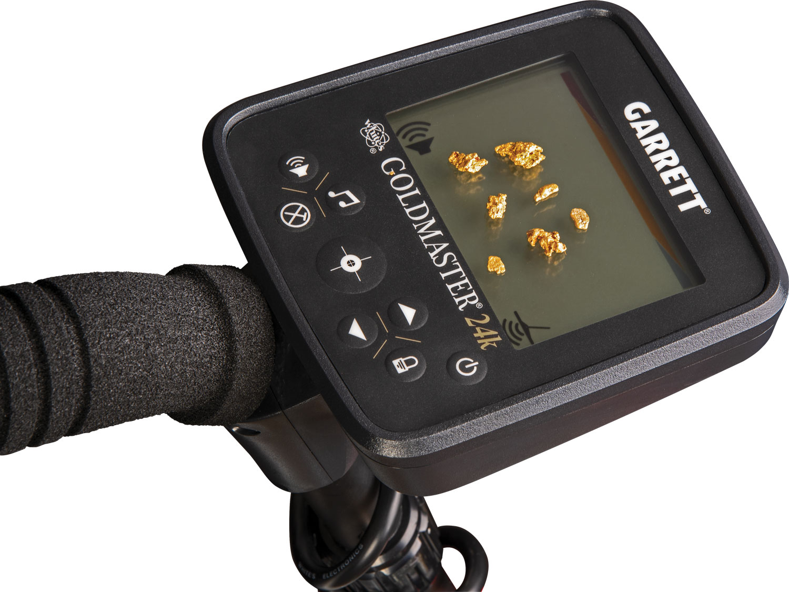
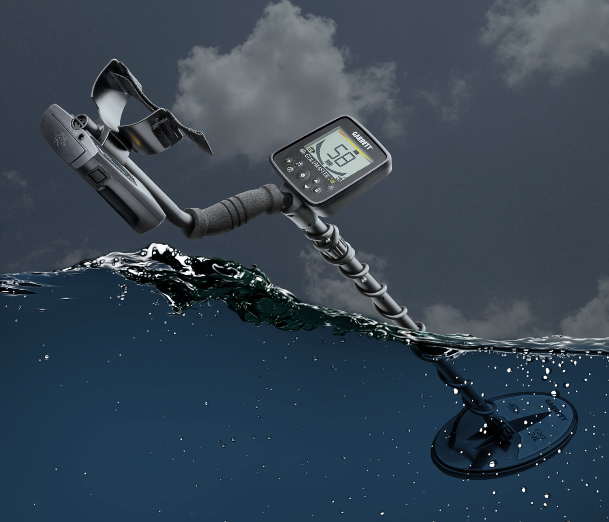
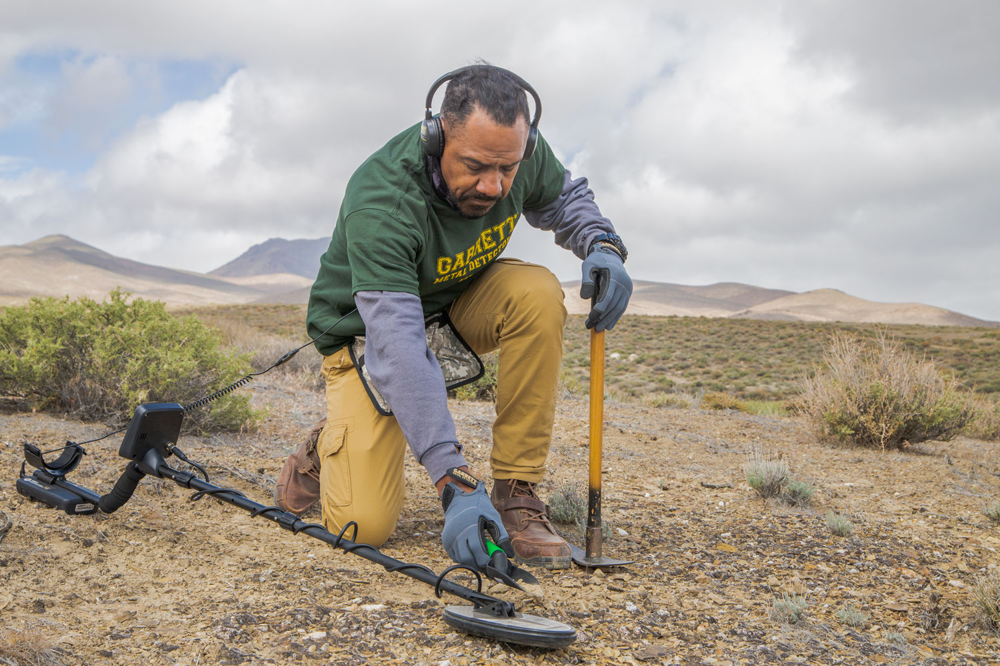
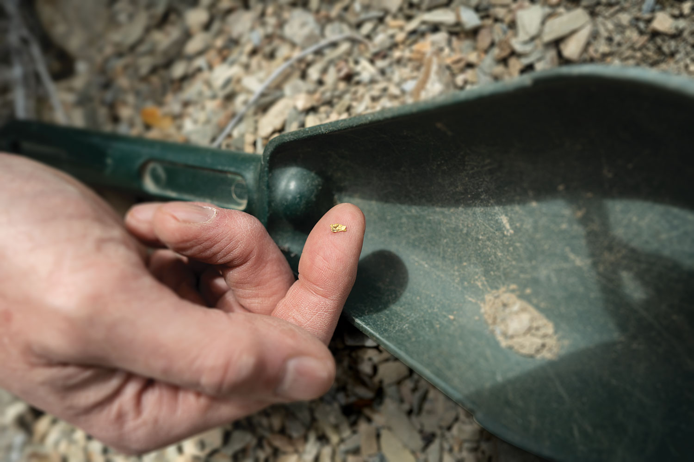

Ampliar







Alta Frequência
Garrett
Goldmaster 24K
A frequência mais alta da linha Garrett — 48 kHz para detectar micro-pepitas de ouro que simplesmente passam despercebidas em qualquer outro detector convencional.
Frequência: 48 kHz
Foco: Pepitas pequenas de ouro
Bobina: 9"
Controles: Sensibilidade e Ground Balance
Bateria: 8x AA
R$ 6.906
ou 12x de R$ 575,50 sem juros